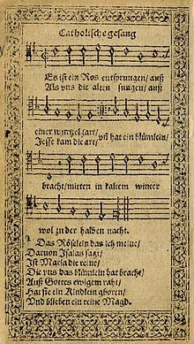

|
|
|
|
1 A great and mighty wonder, Refrain: 2 The Word becomes incarnate 3 While thus they sing your monarch, 4 Since all he comes to ransom, 5 All idols then shall perish |
096新生圣婴
1.伟大奇妙的奥秘，丰富完全治疗，
童贞生下圣婴孩，圣善温柔怀抱。 再来同献歌声！在天荣耀归真神， 在地平安归人！ 2.圣道居住在人间，仍是天上真光； 天使群向牧养人，高声歌唱赞扬； 再来同献歌声！在天荣耀归真神， 在地平安归人！ 3.光明天使成乐队，赞美万有君王， 高山幽谷与海洋，你们也来鼓掌； 再来同献歌声！在天荣耀归真神， 在地平安归人！ 4.衪来救赎众生灵，当爱万灵崇尊， 新生降世的圣婴，乃是救主之君。 再来同献歌声！在天荣耀归真神， 在地平安归人！ 5.到时偶像都消灭，过错也皆除尽， 基督执掌统治权，永远为主为神。 再来同献歌声！在天荣耀归真神， 在地平安归人！ |
|
https://www.mred365.cn/szxg/7099.html
https://hymnary.org/hymn/CWH2021/page/307
|
|
|
|
|


03 A Great and Mighty Wonder arr. James Whitbourn King's College Cambridge 2009 https://www.youtube.com/watch?v=NJ8ieXU-oOw -
https://www.youtube.com/watch?v=MToXUy0nChA
LX1284
A Great And Mighty
Wonder
096新生圣婴
| Text: | A Great and Mighty Wonder |
| Author: | Germanus, c. 634-734 |
| Translator: | John M. Neale, 1818-66 |
| Tune: | ES IST EIN ROS |
| Short Name: | St. Germanus I |
| Full Name: | Germanus I, Saint, Patriarch of Constantinople, d. ca. 733 |
| Birth Year: | 634 |
| Death Year: | 733 |
Germanus, St. [634-734.]
One of the Greek hymnwriters, and one of the grandest among the defenders of
the Icons. He was born at Constantinople of a patrician family; was ordained
there; and became subsequently bishop of Cyzicus. He was present at the
Synod of Constantinople in 712, which restored the Monothelite heresy; but
in after years he condemned it. He was made patriarch of Constantinople in
715. In 730 he was driven from the see, not without blows, for refusing to
yield to the Iconoclastic Emperor Leo the Isaurian. He died shortly
afterwards, at the age of one hundred years. His hymns are few. Dr. Neale
selects his canon on The Wonder-working Image of Edessa as his most poetical
piece (see Neale's Hymns of the Eastern Church, 1862,
and later editions). The earliest biographical account of Germanus is found
in Basil's Menology, under May 12. Later we have a
Memoir by Henschew (Boll. Acta S.S. Mai, iii., 155). His hymns are
given in Migne and Daniel,
and have been translated to a small extent into English by Dr. Neale. (For
further biographical details see Dictionary of Christian
Biographies, pp. 658-659.) [Rev. H. Leigh Bennett, M.A.]
-- John Julian, Dictionary of Hymnology (1907)
Tune Information
| Title: | ES IST EIN ROS (5556553) |
| Meter: | 7.6.7.6.6.7.6 |
| Incipit: | 55565 53432 17155 |
| Key: | F Major |
| Source: | Alte Catholische Geisliche Kirchengasäng, Cologne, 1599 |
| Copyright: | Public Domain |
A Great and Mighty Wonder is an ancient carol based around the words of St Germanus (c. 634 - 732) traditionally sung to the tune "Es is ein Ros' entspungen" 76 76 676 published in "Alte Catholische Geistliche Kirchengesäng" (Köln, Germany: 1599) and harmonised by Michael Praetorius (1571 - 1621)[1]. As with much older music, the time signature is not given, but interpretation of the rhythms reveals it works best in 5/2 time.
https://www.hymnwiki.org/A_Great_and_Mighty_Wonder
Es ist ein Ros entsprungen
| "Es ist ein Ros entsprungen" | |
|---|---|
| German Christmas hymn by Michael Praetorius | |
|

First printed in the 1599 Speyer Hymnal
|
|
| Genre | Hymn |
| Occasion | Christmas |
| Text | Unknown author |
| Language | German |
"Es ist ein Ros entsprungen" (literally "A rose has sprung up") is a Christmas carol and Marian Hymn of German origin. It is most commonly translated in English as "Lo, how a rose e'er blooming", and is also called "A Spotless Rose" and "Behold a Rose of Judah". The rose in the German text is a symbolic reference to the Virgin Mary. The hymn makes reference to the Old Testament prophecies of Isaiah, which in Christian interpretation foretell the Incarnation of Christ, and to the Tree of Jesse, a traditional symbol of the lineage of Jesus. Because of its prophetic theme, the hymn is popular during the Christian season of Advent.[1]
The hymn has its roots in an unknown author before the 17th century. It first appeared in print in 1599 and has since been published with a varying number of verses and in several translations. It is most commonly sung to a melody harmonized by the German composer Michael Praetorius in 1609.[1] The hymn's popularity endures in the 20th and 21st centuries; it has been recorded by such modern artists as Mannheim Steamroller,[2] Linda Ronstadt,[3][4] and Sting.[5][6]
Meaning[edit]
The hymn was originally written with two verses that describe the fulfilment of the prophecy of Isaiah foretelling the birth of Jesus. It emphasizes the royal genealogy of Jesus and Christian messianic prophecies.[1] The hymn describes a rose sprouting from the stem of the Tree of Jesse, a symbolic device that depicts the descent of Jesus from Jesse of Bethlehem, the father of King David.[7] The image was especially popular in medieval times, and it features in many works of religious art from the period. It has its origin in the Book of Isaiah:[1]
The second verse of the hymn, written in the first person, then explains to the listener the meaning of this symbolism: That Mary, the mother of Jesus, is the rose that has sprung up to bring forth the Christ child, represented as a small flower ("das Blümlein"). The German text affirms that Mary is a "pure maiden" ("die reine Magd"), emphasizing the doctrine of the Virgin birth of Jesus.[citation needed] In Theodore Baker's 1894 English translation, on the other hand, the second verse indicates that the rose symbolizes the infant Christ.[8]
Since the 19th century other verses have been added, both in German and in translation.[citation needed]
History[edit]
The poetry of Isaiah's prophecy has featured in Christian hymns since at least the 8th century, when Cosmas the Melodist wrote a hymn about the Virgin Mary flowering from the Root of Jesse, "Ραβδος εκ της ριζης", translated in 1862 by John Mason Neale as "Rod of the Root of Jesse".[9][10]
The text of "Es ist ein Ros entsprungen" dates from the 15th century. Its author is unknown. Its earliest source is in a manuscript from the Carthusian Monastery of St Alban at Trier, Germany – now preserved in the Trier City Library – and it is thought to have been in use at the time of Martin Luther. The hymn first appeared in print in the late 16th century in the Speyer Hymnbook (1599).[10] The hymn has been used by both Catholics and Protestants, with the focus of the song being Mary or Jesus, respectively.[11] In addition, there have been numerous versions of the hymn, with varying texts and lengths. In 1844, the German hymnologist Friedrich Layriz added three more stanzas,[12][13] the first of which, "Das Blümelein so kleine", remained popular and has been included in Catholic[14] and Protestant hymnals.[15]
The tune generally used for the hymn originally appeared in the Speyer Hymnal (printed in Cologne in 1599), and the familiar harmonization was written by German composer Michael Praetorius in 1609.[11] A canon version for four voices also exists, based on Praetorius's harmony and sometimes attributed to his contemporary, Melchior Vulpius.[16] The metre of the hymn is 76.76.676.

{kind=link}
{kind=link}
In 1896, Johannes Brahms used the hymn's tune as the base for a chorale prelude for organ, one of his Eleven Chorale Preludes Op. 122, later transcribed for orchestra by Erich Leinsdorf.[17][18][19]
During the Nazi era, many German Christmas carols were rewritten to promote National Socialist ideology and to excise references to the Jewish origins of Jesus. During Christmas in Nazi Germany, "Es ist ein Ros entsprungen" was rewritten as "Uns ist ein Licht erstanden/in einer dunklen Winternacht" ("A light has arisen for us/on a dark winter night"), with a secularised text evoking sunlight falling on the Fatherland and extolling the virtues of motherhood.[20]
The hymn's melody has been used by a number of composers, including Hugo Distler who used it as the base for his 1933 oratorio Die Weihnachtsgeschichte (The Christmas Story).[1] Arnold Schoenberg's Weihnachtsmusik (1921) for two violins, cello, piano and harmonium is a short fantasy on Es ist ein Ros entsprungen with Stille Nacht as a contrapuntal melody.[21] In 1990, Jan Sandström wrote Es ist ein Ros entsprungen for two a cappella choirs, which incorporates the setting of Praetorius in choir one.
English translations[edit]
Well-known versions of the hymn have been published in various English translations. Theodore Baker's "Lo, How a Rose E'er Blooming" was written in 1894[8] and appears in the Psalter Hymnal (Christian Reformed Church in North America) and The United Methodist Hymnal (American United Methodist Church).[22][23]
The British hymn translator Catherine Winkworth translated the first two verses of the hymn as "A Spotless Rose".[24] In 1919 the British composer Herbert Howells set this text as a motet for SATB choir.[11] Howells stated that:
Howells' carol is through-composed, switching between 7/8, 5/4 and 5/8 time signatures, unconventional for a carol of this era.[26] The plangent final cadence ("On a cold, cold winter's night"), with its multiple suspensions is particularly celebrated.[26] Howells' contemporary, Patrick Hadley reportedly told the composer "I should like, when my time comes, to pass away with that magical cadence".[27] Winkworth's translation was again set to music in 2002 by the British composer and academic Sir Philip Ledger.[28]
A further English translation of the hymn, "Behold, a rose is growing", was written by the American Lutheran musician and writer, Harriet Reynolds Krauth Spaeth (1845–1925). Her four-verse version is often published with an additional 5th verse, translated by the American theologian John Caspar Mattes (1876–1948).[29][30]
Another Christmas hymn, "A Great and Mighty Wonder", is set to the same tune as this carol and may sometimes be confused with it. It is, however, a hymn by St. Germanus, (Μέγα καὶ παράδοξον θαῦμα), translated from Greek to English by John M. Neale in 1862. Versions of the German lyrics have been mixed with Neale's translation of a Greek hymn in subsequent versions such as Percy Dearmer's version in the 1931 Songs of Praise collection and Carols for Choirs (1961).[31]
https://en.wikipedia.org/wiki/Es_ist_ein_Ros_entsprungen
Behind the Hymn: A Great and Mighty Wonder


St. Germanus I
A great and mighty wonder is a little-known Christmas Carol. The hymn is German in origin.
The hymn was written by St. Germanus I. He was born in Constantinople of a patrician family in 634 Greece. He was ordained in Constantinople and subsequently became bishop of Cyzicus. He was present at the Synod of Constantinople in 712, which restored the Monothelite heresy; but in after years he condemned it. He was made patriarch of Constantinople in 715. In 730 he was driven from the see, not without blows, for refusing to yield to the Iconoclastic Emperor Leo the Isaurian. He died shortly afterwards, at the age of one hundred years. He only wrote a few hymns including A Great and Mighty Wonder.

John Mason Neale translated the carol. He was born in 1818 to an evangelical home. In 1942, he was ordained in the Church of England, but his ill health and support of the Oxford Movement kept him from ordinary parish ministry. He had sympathies towards Rome but was often in ill health and devoted his time to improving social conditions. So, Neale spent the years between 1846 and 1866 as a warden of Sackville College in East Grinstead, a retirement home for poor men. There he served the men faithfully and expanded Sackville’s ministry to indigent women and orphans. He also founded the Sisterhood of St. Margaret, which became one of the finest English training orders for nurses. He was often ignored or despised by his contemporaries but is lauded today for his contributions to the church and hymnody. He wrote several books and a variety of hymns. He also enjoyed translating Greek and Latin hymns into English. He claimed no rights to his texts and was pleased to contribute to hymnody as “common property of Christendom.” Many editors judged his translations as unsingable and amended his work. Neale died in 1866.
https://dianaleaghmatthews.com/a-great-and-mighty-wonder/#.YnSyEchBzIU